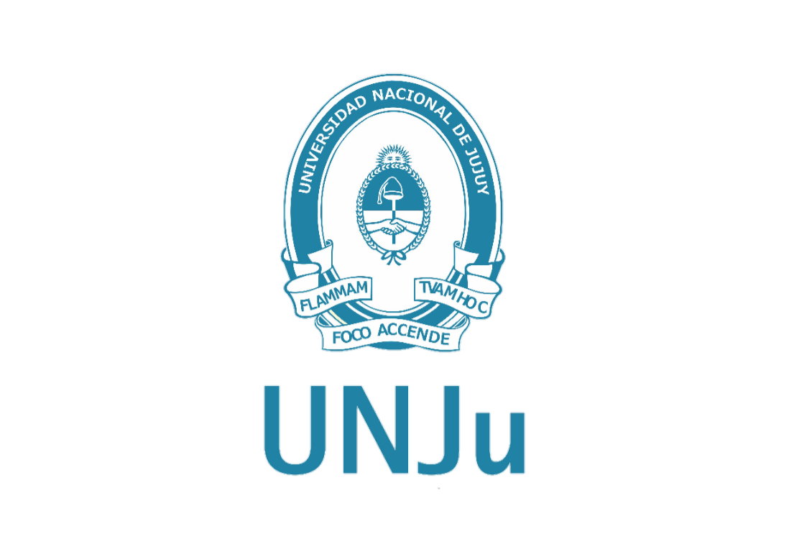
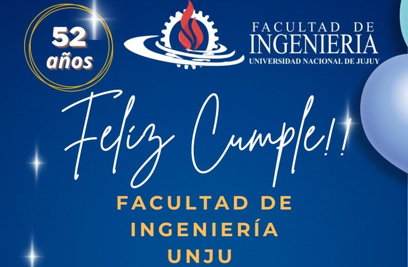
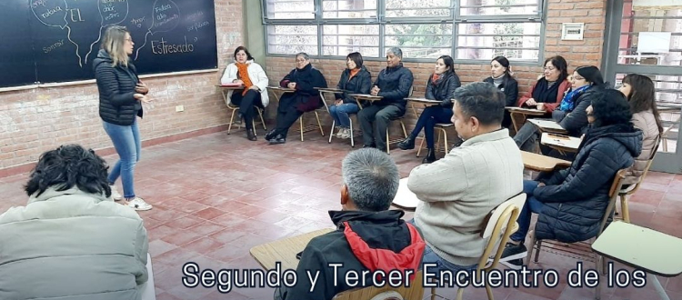

Facultad de Ingeniería
— En cada presente, una oportunidad.
Sobre la Facultad
Situada en el corazón de Jujuy, nuestra Facultad de Ingeniería representa un faro de excelencia académica, donde la innovación y el compromiso se fusionan para forjar el futuro. Descubre cómo nuestra comunidad de aprendizaje trabaja en armonía con el entorno, desafiando los límites y abrazando el cambio con pasión y determinación.
Noticias Recientes

La Facultad de Ingeniería cumple 52 años
📣 ¡52° Aniversario de nuestra querida Facultad de Ingeniería! Y lo festeja con una riquísima....
Enlace

Segundo y Tercer Encuentro de los Talleres de Capacitación de "AUTOCUIDADO Y EMOCIONES" para No Docentes de la FI UNJu
El segundo encuentro, que tuvo lugar el 15 de mayo, se centró en la exploración del tema "Qué son las emociones", mientras que el tercer encuentro, realizado el 22 de mayo, se enfocó en "Habilidades para la vida: Autoconocimiento"...
Enlace